HK-KT-2104
Standard
Ver acabamentos
Tecto: Aço pulverizado prata diamante com placa acrílica transparente (HK-DTA01).
Paredes: Inox hairline.
Porta: Inox hairline.
Piso: PVC (FJ-B01).
Os benefícios resultam do conjunto máquina, controlo e portas. Valores indicados pelo fabricante.
*Valor da documentação técnica do fabricante; o desempenho depende da configuração e das condições de operação.
Uma solução MRL concebida para optimizar espaço, conforto de viagem, eficiência energética e manutenção.
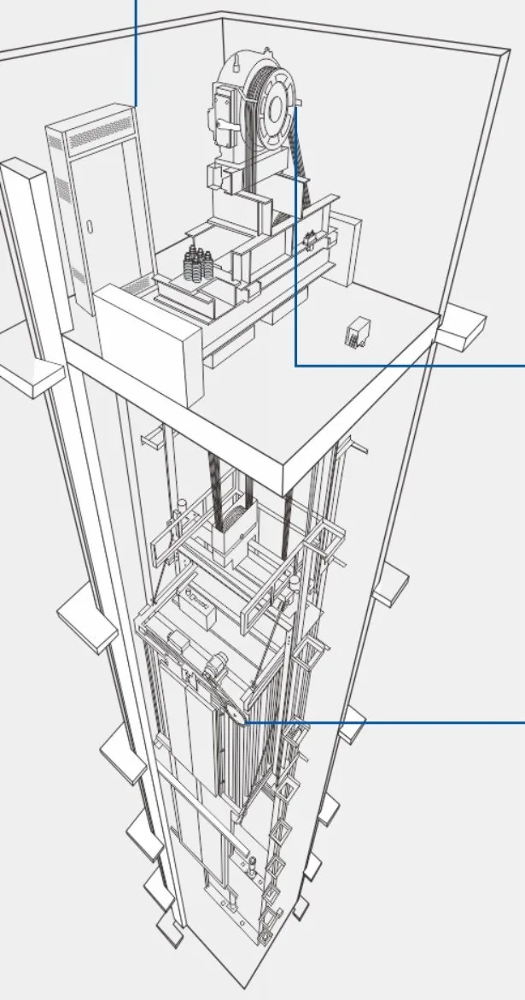
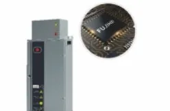
Controlo vectorial de malha fechada, com controlo de distância e estacionamento directo. CANBUS, multi-CPU e 32 bits. Manutenção mais simples do que nos sistemas convencionais.
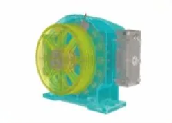
Motor síncrono de ímanes permanentes, sem engrenagens, com transmissão coaxial. Arranque e paragem suaves, baixo ruído e pouca vibração.
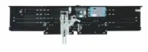
Controlo de frequência variável com detector de carga de autoaprendizagem, que ajusta a velocidade de abertura e fecho em cada piso.
Detector de porta, detector na área da porta da cabine, cortina fotoeléctrica com sinal de fecho e detector de linha.
A cabine standard é a HK-KT-2104, em inox hairline. As restantes são opcionais. Toque no coração para guardar e envie-nos a lista.
Tecto: Aço pulverizado prata diamante com placa acrílica transparente (HK-DTA01).
Paredes: Inox hairline.
Porta: Inox hairline.
Piso: PVC (FJ-B01).
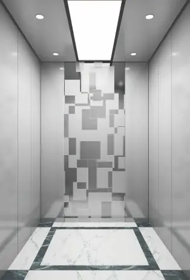
Tecto: Aço pulverizado prata diamante com placa acrílica (HK-DDB05).
Paredes: Inox hairline nas laterais; inox gravado espelhado ao centro do fundo.
Porta: Inox hairline.
Piso: PVC (FJ-B01).
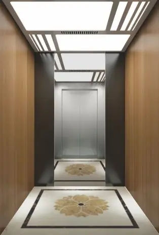
Tecto: Aço prata diamante com acrílico translúcido (HK-DTA21).
Paredes: Fundo em inox espelhado e chapa cinza; laterais com veio de madeira; frente em inox hairline.
Porta: Inox hairline.
Piso: PVC (FJ-B57); mármore ou tijoleira opcional.
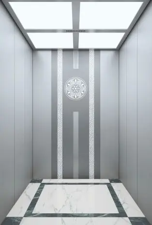
Tecto: Aço prata diamante com acrílico translúcido (HK-DTA23).
Paredes: Inox hairline nas laterais; inox gravado espelhado ao centro do fundo.
Porta: Inox com linhas.
Piso: PVC (FJ-B01).
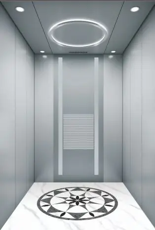
Tecto: Inox hairline decorativo, downlights e anel luminoso (HK-DTA52).
Paredes: Inox hairline nas laterais; inox gravado espelhado ao centro do fundo.
Porta: Inox hairline.
Piso: PVC (FJ-B54).
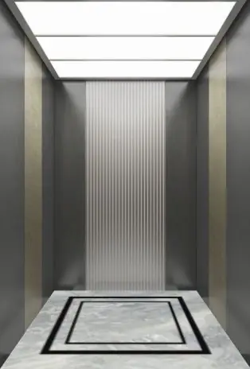
Tecto: Aço prata diamante com acrílico (HK-DTA11).
Paredes: Fundo em inox espelhado gravado; laterais em chapa cinza com padrão moderno; frente em inox espelhado.
Porta: Inox espelhado.
Piso: PVC (FJ-B38); mármore ou tijoleira opcional.
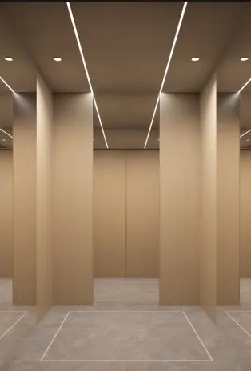
Tecto: Painel metálico branco com faixa LED e downlight (HK-DTA91).
Paredes: Inox espelhado ao centro do fundo; laterais em champagne gold.
Porta: Inox espelhado.
Piso: PVC (FJ-B62); mármore opcional.
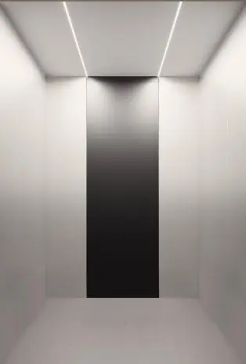
Tecto: Aço revestido branco com linha luminosa (HK-Z08D).
Paredes: Painéis de metal com efeito de cor pérola; painel central escuro no fundo; frente em inox espelhado.
Porta: Inox espelhado.
Piso: PVC (FJ-B64); mármore opcional.
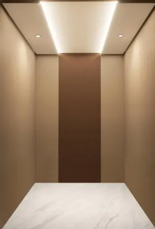
Tecto: Painel metálico amarelo claro com textura de tecido e faixa LED (HK-DTA93).
Paredes: Painéis metálicos com textura de tecido; painel central em tom chá/dourado.
Porta: Inox espelhado.
Piso: PVC (FJ-B36); mármore opcional.
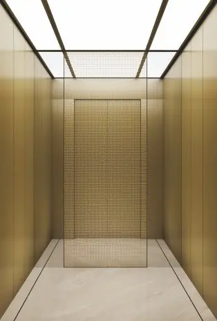
Tecto: Moldura champagne gold com painel translúcido (HD-DTA40).
Paredes: Inox espelhado champagne gold; painel central gravado no fundo.
Porta: Inox espelhado champagne gold.
Piso: PVC (FJ-B39).
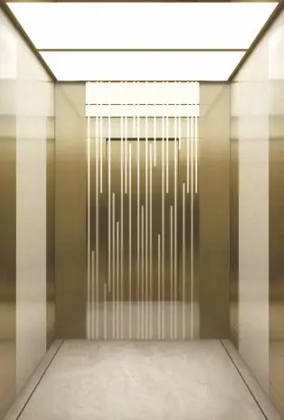
Tecto: Inox espelhado champagne com placa acrílica (HK-DTA42).
Paredes: Champagne jateado com centro espelhado gravado; laterais com placa marmoreada.
Porta: Inox espelhado champagne.
Piso: PVC (FJ-B39); mármore ou tijoleira opcional.
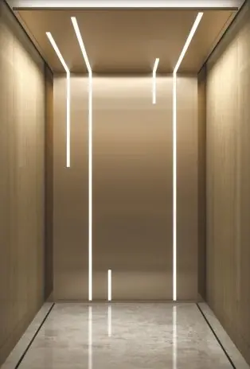
Tecto: Moldura em inox latão antigo jateado com faixa LED oculta (HK-DTA43).
Paredes: Inox latão antigo jateado; luz linear LED no fundo.
Porta: Inox espelhado latão antigo.
Piso: PVC (FJ-B39); mármore ou tijoleira opcional.
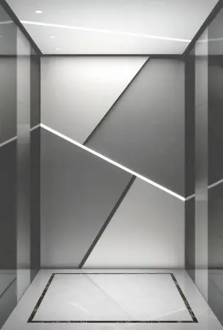
Tecto: Branco brilhante decorativo com spots e luz linear (HK-DTA48).
Paredes: Fundo com painel irregular e luz linear; laterais em inox espelhado titanium preto.
Porta: Inox espelhado.
Piso: PVC (FJ-B44); mármore ou tijoleira opcional.
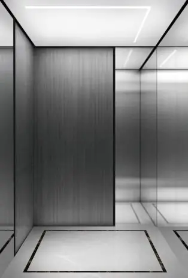
Tecto: Aço lacado com luz linear embutida (HK-DTA49).
Paredes: Inox espelhado com painéis decorativos cinza verticais.
Porta: Inox espelhado.
Piso: PVC (J-B44); mármore ou tijoleira opcional.
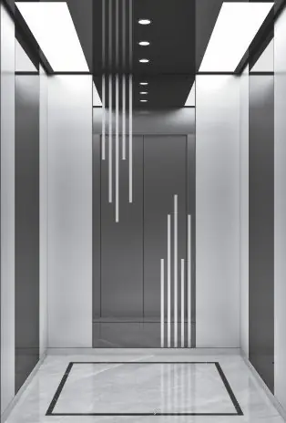
Tecto: Placa acrílica translúcida com lâmpada simples (HK-DTA54).
Paredes: Inox espelhado titanium preto gravado ao centro; inox hairline auxiliar.
Porta: Inox hairline.
Piso: PVC (FJ-B44).
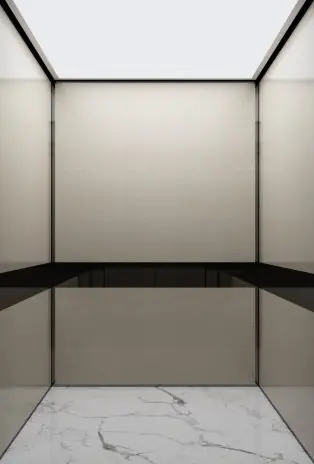
Tecto: Rebordo metálico preto com luz frontal LED (HK-Z02D).
Paredes: Aço com textura de couro marfim claro e linha espelhada titanium preto.
Porta: Aço textura marfim.
Piso: PVC (HK-Z02P); mármore ou tijoleira opcional.
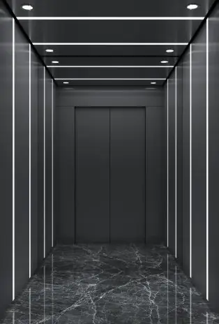
Tecto: Inox hairline titanium preto com downlight LED (HK-Z03D).
Paredes: Fundo em inox espelhado titanium preto; laterais hairline titanium preto com luz linear branca.
Porta: Hairline titanium preto.
Piso: PVC (HK-Z03P); mármore ou tijoleira opcional.
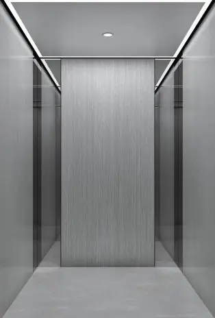
Tecto: Banda de alumínio com luz LED linear e downlight (HK-Z04D).
Paredes: Chapa com veio de madeira clara ao centro; inox espelhado auxiliar; frente em inox espelhado.
Porta: Inox espelhado.
Piso: PVC (HK-Z04P); mármore ou tijoleira opcional.
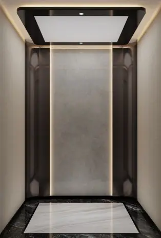
Tecto: Titanium preto espelhado com faixa LED oculta e spots (HK-Z12D).
Paredes: Fundo em titanium preto com vidro artístico; laterais em chapa amarelada e titanium preto.
Porta: Titanium preto escovado.
Piso: PVC (HK-Z12P); mármore ou tijoleira opcional.
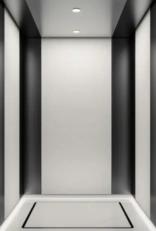
Tecto: Inox hairline titanium preto com superfície tipo tecido (HK-DTA82).
Paredes: Hairline titanium preto com textura de tecido e iluminação oculta no rodapé.
Porta: Hairline titanium preto.
Piso: PVC (FJ-B44).
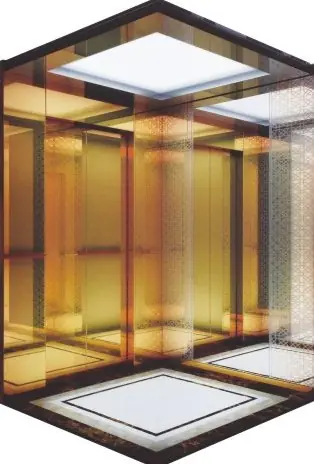
Tecto: Inox hairline titanium gold.
Paredes: Inox espelhado gravado cor cobre antigo e espelho de vidro; corrimão em tubo inox com madeira.
Piso: PVC (FJ-B13); mármore opcional.
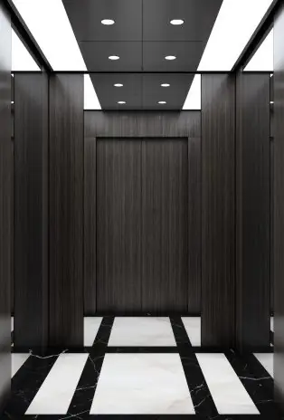
Tecto: Inox hairline natural com LED embutido e moldura titanium preto (HK-Z14D).
Paredes: Fundo em inox espelhado com faixas de madeira; laterais e frente em chapa com veio de madeira.
Porta: Chapa com veio de madeira.
Piso: PVC (HK-Z14P); mármore ou tijoleira opcional.
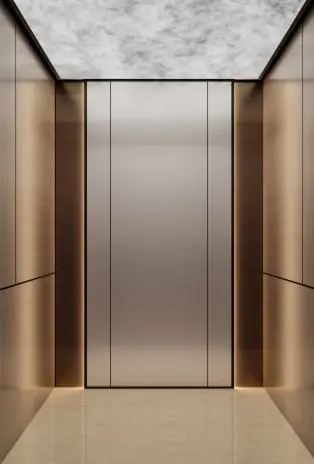
Tecto: Inox titanium preto com acrílico leitoso UV (HK-Z17D).
Paredes: Fundo em inox jateado com arte natural; laterais em folheado de madeira modelado.
Porta: Hairline preto.
Piso: PVC (HK-Z17P); mármore ou tijoleira opcional.
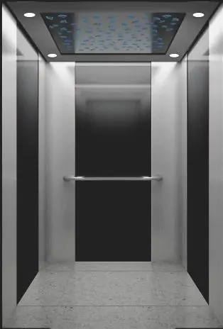
Tecto: Moldura em inox espelhado titanium preto com downlight e painel LED multicor.
Paredes: Inox hairline e titanium preto espelhado; corrimão em tubo inox.
Piso: PVC standard; mármore opcional.
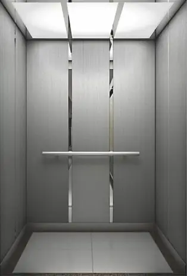
Tecto: Decoração luminosa acrílica com inox espelhado.
Paredes: Inox hairline e inox espelhado; corrimão hairline.
Piso: PVC standard; mármore opcional.
Piso em PVC de série; mármore ou tijoleira como opção nos modelos indicados. Altura da cabine: 2,4 m. Modelos e combinações sujeitos à configuração e à disponibilidade do equipamento.
O painel integrado é o standard. Painéis separados, ecrãs multimédia e acabamentos de porta são opcionais.
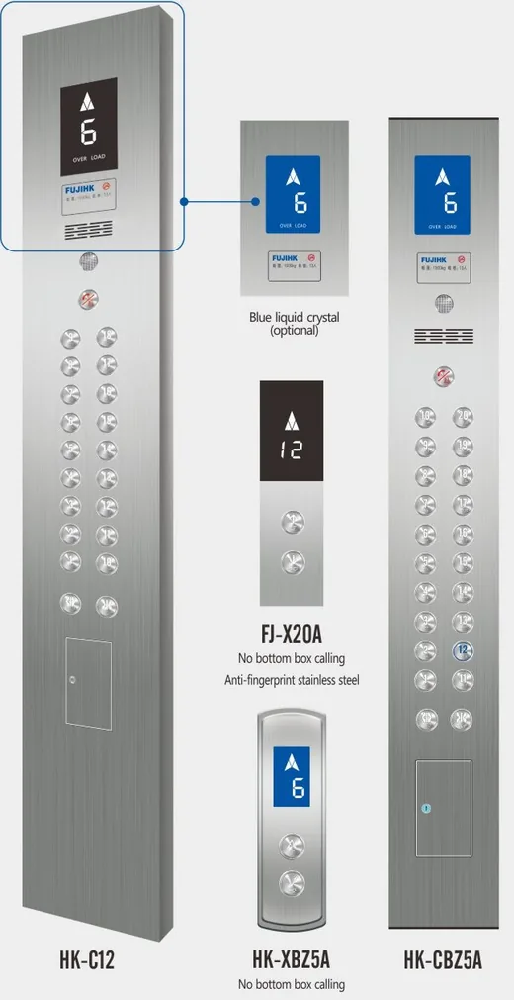
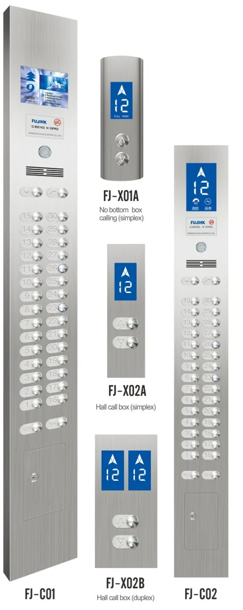
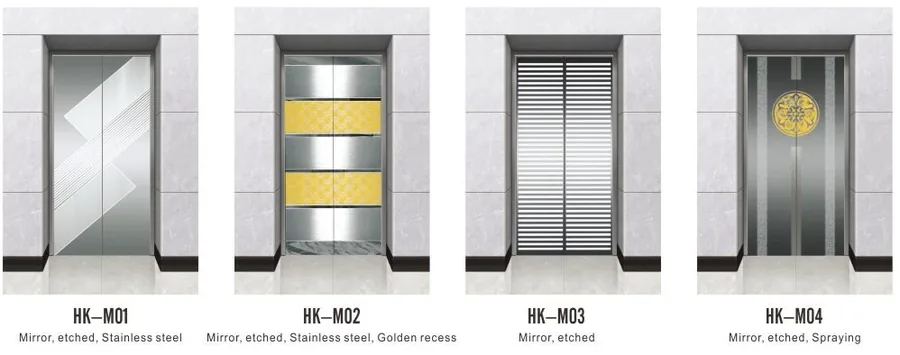
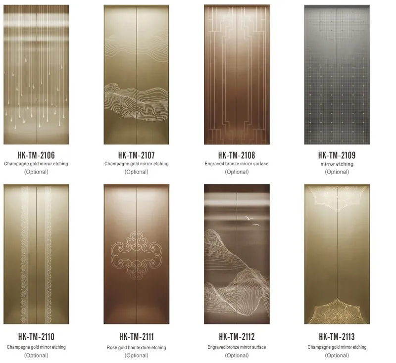
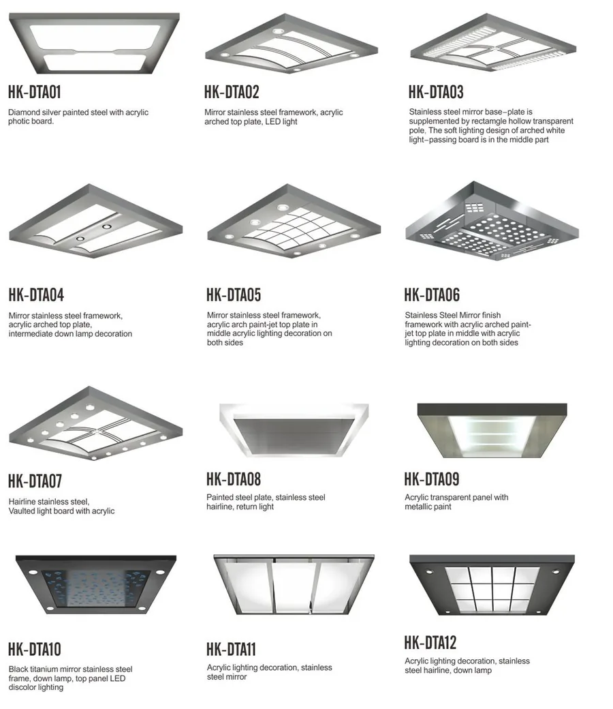
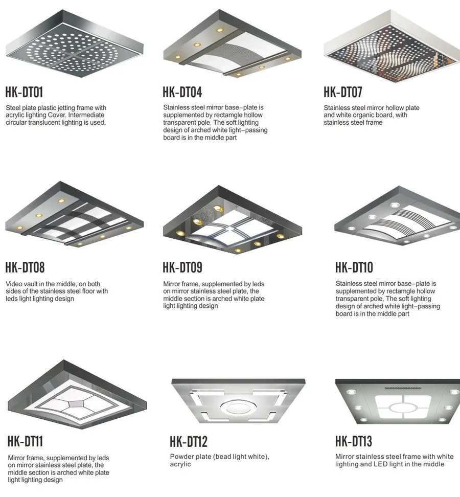
O levantamento técnico confirma as dimensões e as condições reais da caixa antes da encomenda e da instalação.
| Pessoas | Capacidade (kg) | Velocidade (m/s) | Cabine C×P×A (mm) | Porta L×A (mm) | Caixa L×P (mm) | Cabeceira (mm) | Fosso (mm) |
|---|---|---|---|---|---|---|---|
| 6 | 450 | 1,0 | 1100×1100×2300 | 800×2100 | 2050×1850 | 4 200 | 1 500 |
| 8 | 630 | 1,0 | 1400×1100×2300 | 800×2100 | 2250×1900 | 4 200 | 1 500 |
| 1,5/1,75 | 4 400 | 1 600 | |||||
| 10 | 800 | 1,0 | 1400×1350×2300 | 800×2100 | 2250×1950 | 4 200 | 1 500 |
| 1,5/1,75 | 4 400 | 1 600 | |||||
| 2,0 | 4 800 | 1 800 | |||||
| 2,5 | 4 800 | 2 000 | |||||
| 13 | 1 000 | 1,0 | 1500×1550×2300 | 900×2100 | 2350×2150 | 4 200 | 1 500 |
| 1,5/1,75 | 4 400 | 1 600 | |||||
| 2,0 | 4 800 | 1 800 | |||||
| 2,5 | 4 800 | 2 000 | |||||
| 21 | 1 600 | 1,0 | 1900×1800×2300 | 1100×2100 | 2850×2400 | 4 500 | 1 500 |
| 1,5/1,75 | 4 700 | 1 600 | |||||
| 2,0 | 4 900 | 1 800 | |||||
| 2,5 | 5 100 | 2 000 | |||||
| 26 | 2 000 | 1,0 | 1900×2200×2300 | 1100×2100 | 2900×2600 | 4 500 | 1 500 |
| 1,5/1,75 | 4 700 | 1 600 | |||||
| 2,0 | 4 900 | 1 800 |
Valores de referência; a produção final segue o contrato. Para 3,0 a 4,0 m/s, as dimensões são definidas por projecto. A capacidade de 2.000 kg (26 pessoas) consta da tabela do fabricante.
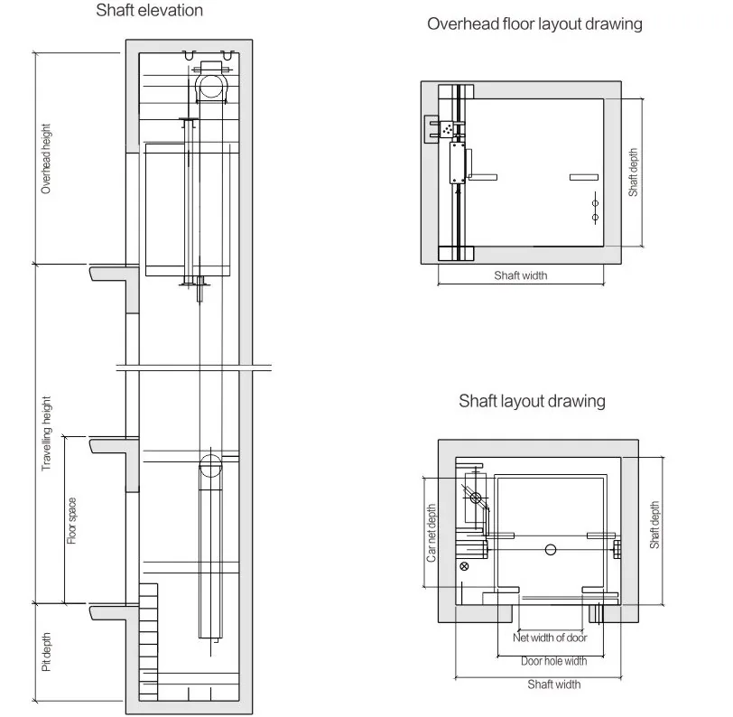
Dimensões finais definidas após levantamento técnico e configuração do equipamento.
Do equipamento aos ensaios, a segurança é verificada em cada fase.
Soluções para hotéis, centros comerciais, átrios e edifícios corporativos, com integração arquitectónica e visibilidade elevada.
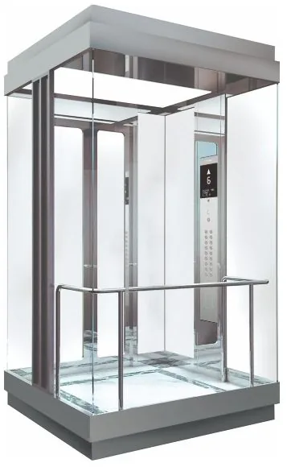
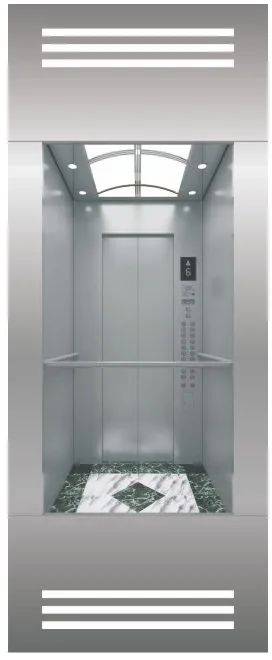
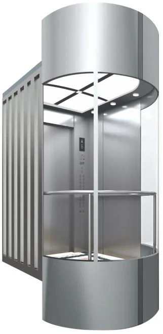
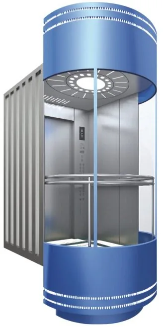
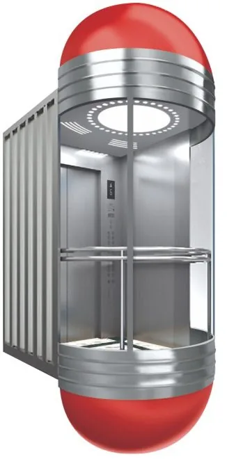
| Pessoas | Capacidade (kg) | Cabine C×P×A (mm) | Porta L×A (mm) | Caixa L×P (mm) | Velocidade (m/s) | Cabeceira (mm) | Fosso (mm) |
|---|---|---|---|---|---|---|---|
| 8 | 630 | 1100×1600×2300 | 700×2100 | 2200×2185 | 1,0 | 4 500 | 1 500 |
| 1,5/1,75 | 4 700 | 1 600 | |||||
| 10 | 800 | 1200×1800×2300 | 800×2100 | 2300×2355 | 1,0 | 4 500 | 1 500 |
| 1,5/1,75 | 4 700 | 1 600 | |||||
| 2,0 | 4 900 | 1 800 | |||||
| 2,5 | 5 100 | 2 000 | |||||
| 13 | 1 000 | 1300×1950×2300 | 900×2100 | 2400×2535 | 1,0 | 4 500 | 1 500 |
| 1,5/1,75 | 4 700 | 1 600 | |||||
| 2,0 | 4 900 | 1 800 | |||||
| 2,5 | 5 100 | 2 000 | |||||
| 16 | 1 250 | 1400×2150×2300 | 900×2100 | 2500×2600 | 1,0 | 4 500 | 1 500 |
| 1,5/1,75 | 4 700 | 1 600 | |||||
| 2,0 | 4 900 | 1 800 | |||||
| 2,5 | 5 100 | 2 000 | |||||
| 18 | 1 350 | 1500×2150×2300 | 1000×2100 | 2600×2600 | 1,0 | 4 500 | 1 500 |
| 1,5/1,75 | 4 700 | 1 600 | |||||
| 2,0 | 4 900 | 1 800 | |||||
| 2,5 | 5 100 | 2 000 | |||||
| 21 | 1 600 | 1500×2450×2300 | 1000×2100 | 2600×2900 | 1,0 | 4 500 | 1 500 |
| 1,5/1,75 | 4 700 | 1 600 | |||||
| 2,0 | 4 900 | 1 800 | |||||
| 2,5 | 5 100 | 2 000 | |||||
| 3,0 | 5 200 | 2 600 | |||||
| 4,0 | 6 000 | 3 850 | |||||
| 26 | 2 000 | 1700×2600×2300 | 1100×2100 | 2800×3050 | 1,0 | 4 500 | 1 500 |
| 1,5/1,75 | 4 700 | 1 600 | |||||
| 2,0 | 4 900 | 1 800 | |||||
| 3,0 | 5 200 | 2 600 | |||||
| 4,0 | 6 000 | 3 850 |
Sala de máquinas, quando aplicável, com as mesmas dimensões da caixa e 2.500 mm de altura. Valores de referência; a especificação final é definida em projecto.
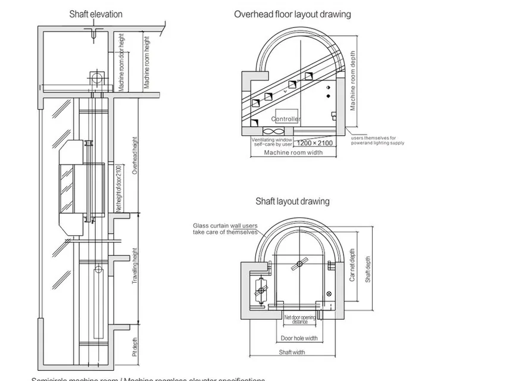
Envie-nos o número de pisos, as paragens e, se possível, plantas ou fotografias da caixa.